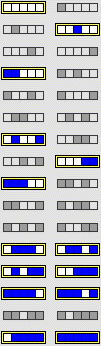
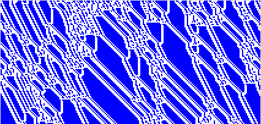

In the CA software under Scenarios, select 1D Configuration (N=5). Observe the pattern. Click the Reset button. This returns the CA to its original line of cells. Try removing the selected configurations one at a time. Does removing any have only a small effect on the pattern?
To help your memory, here are the rule and the pattern.
|  |  |
Here is the answer.
Return to Cellular Automata Explorations.